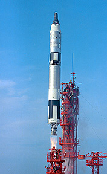
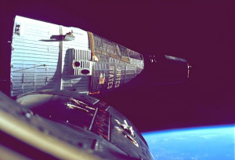

The Gemini Program 1961 - 1965
The National Aeronautics and Space Administration announced on December 7, 1961, a plan to extend the existing manned space flight program by development of a two-man spacecraft. The program was officially designated Gemini on January 3, 1962. It was named after the third constellation of the zodiac, featuring the twin stars Castor and Pollux. The program was operationally completed with the Gemini XII flight. The Gemini Program was conceived after it became evident to NASA officials that an intermediate step was required between Project Mercury and the Apollo Program. Gemini III - Gemini III was the first manned Gemini flight and first U.S. two-man mission.
Gemini IV - During Gemini IV, Ed White performs the first spacewalk by an American lasting 22 minutes. Gemini XII - Gemini XII Rendezvoused and docked with Agena target vehicle. Buzz Aldrin set a spacewalk record of five hours, 30 minutes. Buzz Aldrin took the first photograph of a solar eclipse from space during Gemini 12. All of the major objectives were met as well as many other objectives assigned to each mission, with the exception of a ground based landing which was canceled from the Gemini Program in 1964. However, the precision control necessary to achieve the ground landing objective was demonstrated.